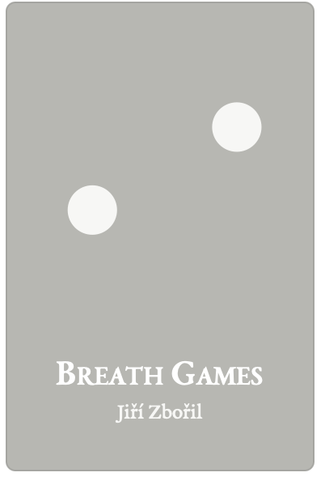

Sit quietly and try this:
Pay attention to your nose. Notice which nostril feels more open at this moment. Make a mental note.
Now place your hands in front of your chest at a comfortable distance, palms facing you. Keep your attention on the sensations in your nose. Then inhale and gently bend your wrists a little away from you. Just a little. Notice the change of pressure in your nose. Make a mental note.
Then bend your wrists slightly towards you. Again, pay attention to the changes in your nose. Breathe in and out. Keep slowly bending your wrists, first one hand, then the other, then both. Try a small range of motion, then a larger one. All the while, keep noticing how the pressure in your nose shifts.
Play with it for as long as you like. When you’ve had enough, check your nostrils again. Is the dominant one still as dominant as before? Are they more even? Did they switch?
If you enjoyed the exercise, you may want to explore your breath a little further. Conscious breathing can become a surprisingly useful everyday skill. The booklet below offers practical ideas to continue.

Practical exercises, simple explanations, everyday applications. Free.
Download the bookletQuestions or thoughts?